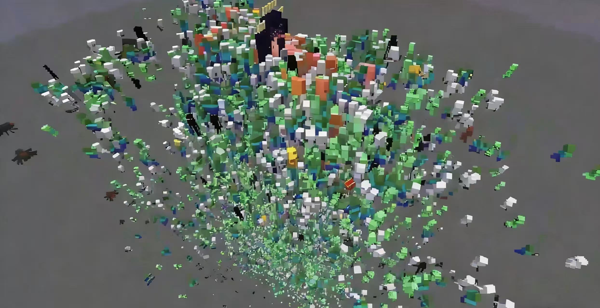
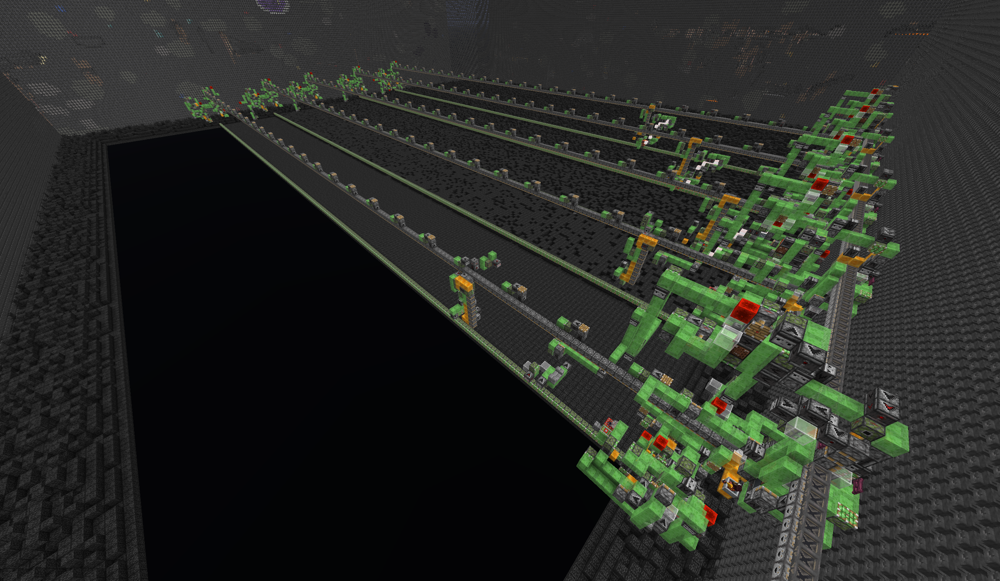
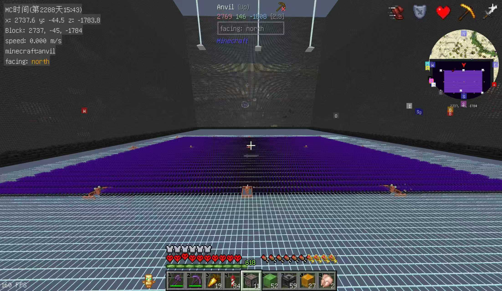
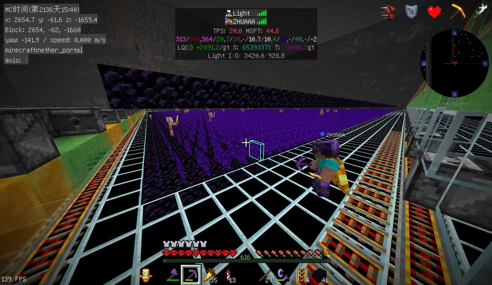
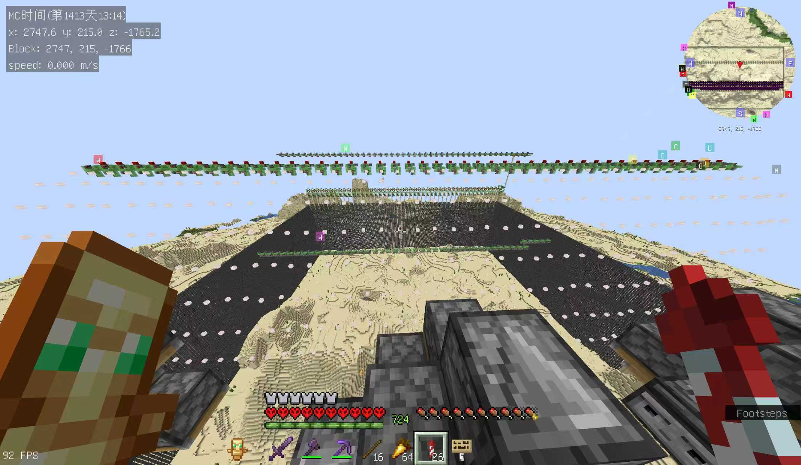
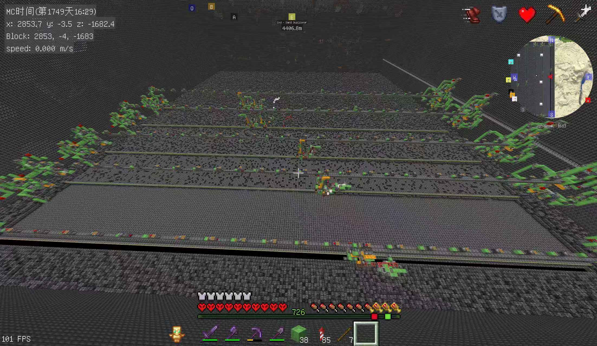

EOL Mob Farm - Basic Definition

EOL (End of Light) Mob Farm is a cutting-edge technical mob farm exclusive to Minecraft Java Edition, renowned as one of the most efficient mob farms in the game’s community.
The widely cited "800 million items per hour" is the maximum efficiency when there is only one player in the mob spawning area. Lower efficiencies could also be achieved by reducing the spawning area.
- Basic EOL Farm: 1-3 million items per hour
- Optimized with Looting III + TNT (lazy chunk looting): 1-8 million items per hour (nearing 10 million/hour)
EOL Mob Farm - Core Mechanisms


Play Video (Download)① Light Suppression
Uses redstone/update suppression mechanics to overload light updates, thus eliminating the brightness of Nether Portal blocks to 0, permanently meeting the "dark environment" requirement for mob spawning—this eliminates any light-based restrictions on mob generation.
② Portal Cutting
Removes obsidian from the portal through update suppressing mechanics frame while leveraging update suppression/skip logic to keep the portal structure intact. This allows mobs to directly spawn in the portal and teleported to the nether, bypassing the overworld mobcap.
These two core mechanisms are the foundation of EOL Mob Farm's extreme efficiency. Unlike traditional mob farms that are limited by light levels and spawn areas, EOL breaks through these constraints completely.
EOL Mob Farm - Workflow & Efficiency

Play Video (Download)③ Full Workflow
Mobs spawn on the modified Nether Portal → Instantly teleport cross-dimensionally to the kill/collection area → Fast elimination with TNT/boat suction + Looting III enchantment → Automated loot collection and sorting.
Key Features & Efficiency
- Efficiency Range： 1-3 million items/h (basic setup) | 1-8 million items/h (fully optimized)
- Core Features： Single-dimension extreme mob spawning, cross-dimensional teleportation, zero-wait mob elimination, high server performance load
EOL Mob Farm - Practical Operations

What I Do as a Player
- Build the light suppressor in the spawn chunks to keep the farm permanently loaded.
- Use a world eater to clear a large area (at least 17*17 chunks) and remove the bedrock
- Construct an obsidian platform and apply update suppression to break the portal frames
- Build a lazy chunk looting system in the Nether, which boosts overall efficiency by 2.5x
- Create a massive storage system for automatic item sorting and packing into shulker boxes.
- Once fully operational, the farm outputs more bone meal and gunpowder than can be used in Creative mode.
- Building and operating an EOL Mob Farm demands precise redstone skills and a deep understanding of Minecraft's game mechanics.
- Every detail from core construction to loot collection - directly impacts the final efficiency.
EOL Mob Farm - Workflow & Summary

Simple Workflow Diagram
↓
[ World Eater ]
↓
[ Cutting Portals using suppressors ]
↓
[ Lazy Chunk TNT Kill Chamber + Looting III ]
↓
[ Hopper Collection → Auto Sorter → Shulker Box Storage ]
As an endgame resource farm, EOL Mob Farm provides an almost unlimited supply of mob drops, making it a game-changer for late-game survival gameplay. While it requires significant technical knowledge to build, the rewards are well worth the effort for dedicated Minecraft players.